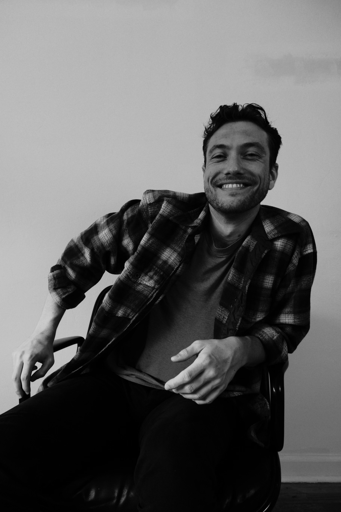

About Jonah Pattison
Introduction
Hello, I'm a senior at Portland State University. Welcome to my personal website. This website exists to showcase my résumé and various projects, school-related, and personal.
Background
Born and raised in California, I moved to Oregon at the first opportunity to escape the heat and enjoy the rainy forests. After spending time at Portland Community College, I relocated to the Oregon coast, where I lived for several years. Eventually, I decided to return to school, prompting my move back to Portland. In 2020, I enrolled in Portland State University’s Bachelor of Science program in Computer Science.